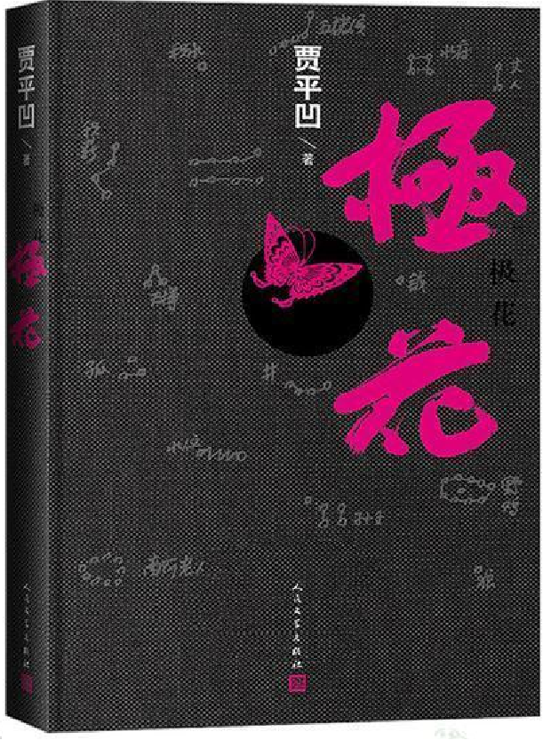

- 内容概括
《极花》是贾平凹的一部小说，主要描写了一个被拐卖女孩的遭遇。胡蝶是一位从乡下来到城市的、受过教育的、一心向往小资生活，并且渴望成为一名真正“城市人”的年轻女性。然而，正是这样一位看起来有思想的女性，却因一次意外，落入了人贩子的手中，被拐卖到了偏远的小山村成了当地一位村民的“妻子”。这个小山村还拥有着最传统的生活方式，宣扬着各种各样的迷信谣言，村民们也都保留着最原始的相处方式，他们以拐卖妇女来满足村里单身男性的娶妻需求。慢慢的，胡蝶由最初的抵抗愤怒逐渐转换为接受释然，也有了自己的家庭和孩子。然而，一次偶然的机会，胡蝶得到了和生母见面的机会，被警察救出小山村，可仅仅是过了不到一周的时间，大众的舆论和谣言便大肆影响胡蝶的正常生活，由于心系亲生儿子，她又重新启程回到山村。
- 主要人物分析
——老老爷：旧时代道义的守护者，新社会转型的淘汰者。
老老爷在小乡村是如同神明一般的存在，他上知天文下知地理，会编花绳，会看天文......无论是给新生儿取名字，还是家中出现变故，村民里大大小小的事情都会讨教老爷爷。他可谓既肩负着农村到的承担者的使命，又自觉履行文化传递者的职责，他的存在，就像是一个传统旧社会的缩影。老老爷在坚守传统的路上是落寞的，他所代表的传统信仰也不断被挑战。这些挑战有来自蝴蝶代表的城市文化的挑战，有米自同样处在乡村中的普通村民的挑战，也有来自代表权力的村长的挑战。老老爷这种传统文化坚守者的群体范围日渐缩小，受所处时代环境的挤压，他们尽力通过各种细微处的坚持和努力希望可以让乡士文化蕴含的传统精神传承下去。
——胡蝶：旧社会的受害者
蝴蝶的改变可以说是双重影响之下的改变：一是小山村环境的无形熏染，即被动转变;是胡蝶自身心态的不断调整，即主动转变。小山村环境的耳濡目染包括黑亮、黑亮爹、老老爷等，在他们的影响下，胡蝶的心念随之改变，从对抗至怀疑自身最终到接受。以胡蝶的被囚禁为例，被拐卖初期，胡蝶被关在窑洞里，囚禁限于外部因素，黑亮爹通过空间的局限与对胡蝶人身自由的限制来实现对人身的绝对控制。进一步的控制则为心理控制，通过强行同房，致使蝴蝶怀孕。怀孕是一个很好的控制手段，圪染村的男人们深知这个道理，他们都明白，只要有孩子拴着，人就很难逃跑了。最高层次的控制是对象自身在一系列过程中对自我的控制。胡蝶最终也到达了这个自我控制的程度：一是寻星，从老老爷告知她天上一颗星地上一个人之始，她就开始了仰望星空寻星的过程，经历了寻星没有星、思考为什么没有星、期待又恐慌地盼眷星出现、两星显现又失望、实则没有星但唯有胡蝶自己能看到星的过程，这一系列过程对应胡蝶的心理变化，即从对抗到自我怀疑，最终自我说服的过程。至此，胡蝶经由村子的外部影响，加之不断的自我怀疑、自我暗示，彻底转变为小村子的胡蝶了。
——黑亮：传统的农村男性
黑亮土生土长在小山村，从小耳濡目染着乡村的文化和习俗。他本拥有一个妻子，本可以拥有一个传统的小家庭。然而，他的妻子抛弃了他，但是农村的传统是没有女人的男人会被人看不起，所以他选择绑架女性；还为了所谓的“面子”强奸了胡蝶，并囚禁了胡蝶——既是用实际的人身监禁剥夺了胡蝶的人身自由，又用农村男尊女卑、夫唱妇随的传统价值观监禁、规训了胡蝶作为一个女性的人格独立。除此之外，黑亮多次用“城市剥夺了农村单身汉的幸福”为理由辩护他监禁和残害胡蝶的行为。他对城市男人怀有敌意，认为绑架只不过是“夺回自己原本具有但被夺走了的权利”。
黑亮的抱怨和找借口有一定现实的因素。中国的城乡发展不均衡是现实情况。体现在比如说财富收入分配不均、文化产品服务对象不均、还要接受种种来自城市的歧视。所以他对城市和城市人有怨气是正常的。
贾平凹能写到城乡矛盾这一点，体现了他对现代社会的不公平现象有一定的反思。但是问题在于，认为“拥有”一位女性是男性理所当然的权利，这是封建文化的荼毒。另一个问题是，把对不公平的愤怒宣泄在女性身上，非但不是追求公平的行为，反而是“弱者压迫弱者”的一种行为。
而这一切实际上都是封建文化的悲催产物。
回顾本书情节，黑亮其实是一个很复杂的人物。根据巴特勒的性别表演理论，所谓的男性气质其实是一种表演，在不同的社会历史的情景下，性别表演的脚本不同。而在《极花》这本书里，传统的中国农村要求男人拥有或占有一个女人来维护自己的男性气质，这样他才能让别人认可、受到社会的尊重。而黑亮作为个人，是很难突破这种性别表演的要求的。他有对正常家庭、爱情、亲情的渴望和想象，他理解胡蝶，对于她也在努力呵护和听从——他在努力做一个好丈夫，尽管他的妻子是通过错误的方式绑架来的。然而，在恶劣的传统环境下，他还是做出了残害女性的事，农村的一切于他而言都是一种信条，他没有勇气、也不愿意去违背传统的封建道义。因此，人性和兽性两面兼具，而一个人的深刻性是基于不同环境中的，在作品中，黑亮最终只能允许其兽性的一面压过人性，从而满足农村对于“正常男人”的定义，表演成一个被大家普遍接受的“男人”形象。
——家里的毛驴：任劳任怨的女性
文中多次提到家中的毛驴，此毛驴可以被视为对于女性的比喻化，它负责生育、毫无怨言、一心包揽所有工作，从始至终不离不弃。而这个毛驴所具有的品质，正是小山村的人们所追求的妻子形象。
- 贾平凹性别意识的积极性
贾平凹能够很正确的认识到拐卖妇女的错误性。通过《极花》的后记来看，贾平凹这部作品的素材源于他身边真实发生的拐卖事件，而他清楚地认识到此问题的严重性和普遍性，于是决定开始下笔完成这部作品。在作品内容中，贾平凹通过胡蝶等角色的台词不断强调拐卖的错误性，细节刻画了被拐卖途中女性会经历的强暴行径，并且始终强化小山村和城市中对于拐卖认知的差异对比，进而大大突显拐卖问题的严峻性，引发读者共鸣。
在作品中，贾平凹不仅仅探讨了“拐卖”这一问题，除此之外，他还着重写出了农村的村民们对于城市的敌意和偏见，他们一致认为，城市的男性抢走了他们应得的女性，至此使得农村男女比例大幅度失衡。在此点上，作者个人是偏向于赞同此观点的。由于城乡阶级不同，经济水平也不同，自然导致教育资源或物质资源分配不同，从而使得农村男性拥有较劣势的择偶条件。除此之外，正是因为偏远乡村人们受教育程度不高，村民们才会始终秉持着旧时代的习俗，变得大男子主义，不尊重女性，从而赞同“拐卖妇女”这种行为的发生——这些都是交叉性的体现，映射出了社会的不公平性。
- 贾平凹性别意识的局限性
本部作品选择了第一人称叙事，从一个被拐卖的女性的视角叙事，而这对于一个男性作家来说非常大胆。但是，很遗憾的是，我认为贾平凹并没有足够的能力驾驭这种叙事。比如说，在作品中有一部分是是这样的：胡蝶被绑到乡村后偷偷逃跑，对绑架者只有愤怒的她却在逃跑时想到了黑亮去世的母亲，由于害怕黑亮去世的母亲看到黑亮没有媳妇而难过，她居然在逃跑时还不忘在黑亮母亲的照片上盖布——这是多么匪夷所思的事情啊！作家在主角身上寄托了自己所以为的女性共怜情怀，寄托了他自己所推崇的母性光辉，居然写出了如此欠缺逻辑和武断的内容。
因此，总结来说，贾平凹认为自己可以为女性发声，他认为他可以代表女性——而实际上他并没有做到这一点——而他的这种性别叙述视角的失败也正是由于他认为自己能够代表女性的过度自信。”此可以看出贾”凹的性别意识仍有一些欠缺，他作为男性天生难以理解女性的生活状况，特别是那些作为性别暴力受害者的女人。
由于贾平凹自身便是农村出身，所以他对于书中所提到的“城市抢走农村资源”是极为赞同的。同时，在文章开篇部分，在写到胡蝶对农村的不屑时，作者也是饱含极其讽刺的态度的。
（3）Female stereotype
结合贾平凹和乡土文学有关的所有作品，女性形象都可以被归为几大固定的类型——这可以被看作对于农村女性的偏见。首先会有一类“知青”形象的女性，她们思想开放，但后期会受到变故，使得人生道路发生改变。其次会出现一类多管闲事的女性形象。她们喜欢八卦，喜欢关心别人的琐事，啰啰嗦嗦、大大咧咧。接着会有一类“一心向夫君”的妇女形象。她们勤勤恳恳，生活里只有农作物、丈夫和孩子，哪怕她们被家暴被欺负，她们仍旧会陪伴在丈夫周围，心甘情愿成为丈夫的附属品。
（4）男性凝视
在这部作品中，男性凝视占据在各个细节中。无论是对于胡蝶外貌的描写，还是村民们对于胡蝶的评价，甚至是城里人对于胡蝶的议论，都会聚集在她的“皮肤白”“腿长”“眼睛大”上。除此之外，书中在提及其它女性形象时，都要和胡蝶的外貌加以对比，强调其他女性没有胡蝶长相姣好。而以上这些都是基于男性凝视之上的体现。
（5）没有体现到女性力量
在这部作品中，女性力量是缺失的、是矛盾的。首先，作者对于拐卖事情是存有悲观主义的，也就是说，作者认为大部分女性没办法反抗拐卖现状，这就导致了对于胡蝶女性力量刻画的不足。此外，这部作品中，每一个女性角色最终都是屈服于现实的。她们为了生活任劳任怨，承担着家庭主妇的责任，满足现状，默默忍受一切家暴、欺压、性侵等行为，因此女性的形象在整部作品中都是软弱的。
正如作家在采访中所提到的，采访人询问贾平凹“是否在书写女性形象时有意克服自己的男性意识”，而贾平凹声称“在社会中过日子，哪一个女人能离得开男人？”以及“保护女性的政策始终体现着女性的弱势”“男女是两个极端，男性和女性需要拥有极其大的差异性”。通过作家的这些言论，我们不免能看出其性别意识的局限性。在贾平凹的潜意识中，女性力量始终是缺失的，女性没有能力去应对突发问题，而男性则是女性必须要依靠的对象——这种观念看似在保护女性，号召男性帮助女性，但内里充满了厌女情绪。除此之外，作家认为男女性别是两个极端，男女需要按照刻板印象的标准来表现，这也是一种传统且古板的错误性别观念，不仅拘束了“人权”的自主，尤其加深了性别的对立。
综上所述，贾平凹《极花》这部作品很尖锐地指出了拐卖问题，同时作者还加入了对于农村、城市等阶级性的探讨。但与此同时，其对于性别认知的局限性也是十分显著的。
- Summary of the plot
The Caterpillar Flowers is a novel by Jia Pingwa that focuses on a girl who has been trafficked. Hu Die is an educated young woman from the countryside to the city who aspires to improve her living conditions and assimilate into urban life. However, this seemingly thoughtful woman falls into the hands of traffickers. Due to an accident, she is trafficked to a remote mountain village to become the “wife” of a local villager. Unfortunately, the town also has the traditional way of life, preaching all kinds of superstitious rumors. The villagers retain the most primitive method of getting along with each other. They sell women to meet the needs of single men in the village to marry. Hu Die gradually switched from initial resistance and anger to acceptance, relief, and her own family and children. However, Hu Die gets an opportunity to meet her biological mother by chance. It is rescued from the village by the police, but after less than a week, public opinion and rumors affect Hu Die’s everyday life. Because of her heart for her biological son, she sets off again to return to the village.
- Analysis of the main characters
- Lao Lao Ye: the guardian of traditional morality
The Lao Lao Ye in the small village is like a god-like existence; he knows astronomy and geography, traditional handcraft, and reads almost everything. Whether it’s naming a newborn or a change at home, the villagers will consult the old grandfather on matters large and small. He can be described as shouldering the rural mission to the bearer and consciously fulfilling the duties of the cultural transmitter, his existence, like an epitome of the old traditional society. The old grandfather is despondent on his way to holding on to tradition, and the conventional beliefs he represents are constantly being challenged. These challenges come from the urban culture represented by the butterfly, the ordinary villagers in the countryside, and the village chief who represents power. The group of traditional culture stalwarts like the old master is shrinking daily, squeezed by the environment of the times they live in. Nevertheless, they try their best to pass on the traditional spirit contained in the culture of the villagers through their persistence and efforts in various small ways.
- Hu Die: A victim of the old society
Hu Die’s change can be said to be a change under two influences: one is the invisible influence of the small mountain village environment, i.e., passive transformation, and the continuous adjustment of Hu Die’s mentality, i.e., active change. The small mountain village environment affects Hei Liang, Hei Liang’s father, and the older adult. Under their influence, Hu Die’s mind changes from confrontation to suspicion to acceptance. Take Hu Die’s captivity as an example; at the beginning of her abduction, Hu Die is locked up in a cave home, and her captivity is limited to external factors. Moreover, Hei Liang controls her personality by limiting space and restricting Hu Die’s freedom. In the early stages of the abduction, Hu Die’s captivity is limited to external factors. Pregnancy is a reasonable means of control, and the village men know this well. They all understand that it will be difficult for people to escape if a child is tethered. The highest level of control is the ego’s control by the object itself in a series of processes. The first is the search for the star. When the older man tells her that there is a star in the sky and a person on the ground, she looks up at the lead and searches for the star. Next, she goes through the process of searching for the star, thinking about why there is no star, expecting and panicking for the lead to appear, and being disappointed by the appearance of two stars. The fact that there is no star but only Hu Die herself can see the star. This series of processes corresponds to Hu Die’s psychological changes, i.e., from confrontation to self-doubt and self-convincing. At this point, through the external influence of the village, coupled with constant self-doubt and self-suggestion, Hu Die has wholly transformed into a traditional rural woman.
- Hei Liang: A traditional rural male
Heilang was born and raised in a small mountain village and grew up with the culture and customs of the countryside. He could have had a wife, could have had a small traditional family. However, his wife abandoned him, but the rural tradition is that a man without a woman is looked down upon, so he chose to kidnap women; he also raped and imprisoned Hu Die for the sake of so-called “Men’s vanity” - both by depriving Hu Die of her freedom with actual physical imprisonment and by imprisoning and disciplining Hu Die as a woman with the traditional values of male superiority and female inferiority. He also raped Hu Die for the sake of the so-called “face.” He imprisoned her - depriving her of her freedom by physical imprison ment and imprisoning and disciplining her as a woman with the traditional values of male superiority and female inferiority in the countryside. In addition, Hei Liang repeatedly justifies his imprisonment and brutalization of Hu Die by saying that “the city deprives rural bachelors of their happiness. He is hostile to urban men and believes that kidnapping is merely a way to “regain the rights that he had but were taken away from him.
Hei Liang’s complaints and excuses have some realistic elements. China’s uneven development between urban and rural areas is a reality. This is reflected in, for example, the uneven distribution of wealth and income, the erratic service targets of cultural products, and the discrimination from the city. Therefore, it is normal for him to have grievances against the city and its people.
Jia Pingwa’s ability to write about the contradictions between urban and rural areas reflects his reflection on the inequities of modern society. But the problem is that the belief that “owning” a woman is a right that men take for granted is the poison of feudal culture. Another problem is that to vent one’s anger at injustice against women is not an act of seeking justice but an act of “the weak oppressing the weak.”
And all of this is a sad product of feudal culture.
Looking back at the book’s plot, Hei Liang is a very complex character. Butler’s gender performance theory says to be a man recognized and respected by others. Therefore, one must maintain masculinity by owning or possessing a woman - “masculinity” is a performance. And Hei Liang is a product of this gender performance. He has the desire and imagination for an average family, love, and affection. He understands Hu Die and tries to care for and listen to her - he is trying to be a good husband, even though his wife was kidnapped wrongly. However, under the harsh traditional environment, he still commits female mutilation. Everything in the countryside is a creed for him, and he does not have the courage and is not willing to go against the traditional feudal morality. Thus, there are both sides to humanity and bestiality, and the profoundness of a person is based on different circumstances. In work, Hei Liang eventually allows his bestial side to overpower his humanity, thus satisfying the rural definition of "normal man" and performing as a generally accepted image of "man".
- The positivity of Jia Pingwa’s gender awareness
- Awareness of the problem of trafficking
Jia Pingwa recognized the wrongness of abducting and selling women quite correctly. From the afterword of Caterpillar Flowers, it is clear that Jia Pingwa’s material for this work originated from an actual trafficking incident around him. He recognized this problem’s seriousness and prevalence, so he started writing and finished this work. In the content of his career, Jia Pingwa constantly emphasizes the wrongness of trafficking through the lines of Hu Die and other characters, detailing the rape experienced by women on the way to be trafficked and continually reinforcing the difference between the perception of trafficking in small mountain villages and the city, thus significantly highlighting the seriousness of the problem of trafficking and arousing readers’ empathy.
- Combination with Intersectionality
In his work, Jia Pingwa not only explores the issue of “abduction and trafficking” but also focuses on the villagers’ hostility and prejudice against the city, who unanimously believe that men in the town have taken away their rightful share of women, thus making the ratio of men to women in the countryside significantly imbalanced. The author is personally inclined to agree with this point of view. Furthermore, the difference in class and economic level between urban and rural areas naturally leads to a different distribution of educational or material resources, making rural men less favorable choice of spouse. In addition, because people in remote villages are not well educated, villagers continue to uphold old customs and become macho and disrespectful to women, thus approving the occurrence of “trafficking in women” - all are intersectional. These are the manifestations of social inequity.
- Reflections on the general situation of women in family and society
The writer has created a memorable character in this work - “Donkey.” The donkey in the place is mentioned several times in the text, and this donkey can be seen as a metaphor for the female, who is responsible for childbirth, has no complaints, takes care of all the work, and never leaves. The quality of this donkey is precisely the image of a wife that people in the small mountain village are looking for. Therefore, it is clear that Jia Pingwa has realized the slave-like status of women in the family.
- Limitations of Jia Pingwa’s Gender Consciousness
- Representing the female perspective with a male tone
This work chooses a first-person narrative from the perspective of a trafficked woman, Liang’s very bold for a male writer. However, unfortunately, I don’t think Jia Pingwa is capable enough to handle this kind of narrative. For example, there is a part in the work where Hudie is kidnapped to the countryside and escapes secretly. Still, she is only angry at her kidnappers when she thinks of Hei Liang’s deceased mother while running. Because she was afraid that Hei Liang’s d” ceased mother would be sad to see that Hei Liang had no daughter-in-law, she did not forget to cover the picture of Hei Liang’s mother with a cloth when she escaped. The writer pinned on the protagonist his so-called feminine co-pity and esteemed maternal glory and wrote something so illogical andPingwa’sry.
Thus, in summary, Jia Pingwa thinks he can speak for women. He believes he can represent women-which he does not, in fact, do-and the failure of this gender narrative perspective is due to his belief that he can convey women’s Overconfidence.” This shows that Jia’s “gender consciousness is still somewhat lacking. He inherently has difficulty understanding women’s life situations as men, especially those of women who are victims of gender violence.
- Representing the female perspective with a male tone
The author assumes himself as “Hu Die” and thinks he can master the female mind and think and act instead of Hu Die, which is a minimal and misinterpreted existence. For example, in the story, Hu Die feels guilty for the death of Hei Liang’s mother, although it is not her business at all. Also, Hu Die becomes maternal as soon as she has a child. It thus becomes tolerant and fond of everything around her, which shows the embodiment of typical male motherly feelings, a male fantasy of female motherly love.
- Praise for the countryside and prejudice against urban people
Since Jia Pingwa comes from a rural background, he strongly agrees with the idea that “the city has taken away rural resources” mentioned in the book. At the same time, in the opening part of the essay, when writing about Hu Die’s disdain for the countryside, the author is also full of a sarcastic attitude.
In all of Jia Pingwa’s works related to vernacular literature, the female stereotype can be categorized into severaDie’sed types - this can be seen as prejudice against rural women. First, there is a category of “youth” women, who are open-minded, but later suffer from changes that change their paths. Secondly, there will be a category of nosy women. They like to gossip to care about other people’s trivial matters, are nagging, and are big-hearted. Then there will be a category of women whPingwa’sevoted to their husbands.” They are hard-working, with only crops, husbands, and children in their lives, and even if they are bullied by domestic violence, they will still be around their husbands and willingly become their husbands’ appendages.
In this work, the male gaze occupies all the details. Whether it is the depiction of Hu Die’s appearance, the villagers’ comments on Hu Die, or even the city people’s comments on Hu Die, they all focus on her “white skin,” “long legs,” and “big eyes. “In addition, when other women are mentioned in the book, they are all compared with Hu Die’s appearance, emphasizing that other women are not as good-looking as Hu Die. And all of the above is based on the embodiment of the male gaze.
- Failure to reflect female power
In this work, female power is missing and contradictory. First, the author is pessimistic about trafficking; that is to say, the author believes that most women cannot resist the trafficking situation, which leads to the lack of portrayal of Hu Die’s female power. In addition, every female character in this work eventually succumbs to reality. They work hard for a living, take on the responsibility of homemakers, satisfy the status quo, and silently endure all acts of domestic violence, bullying, and sexual assault. The women are portrayed as weak throughout the work， defending traditional values in the countryside that harm women.
As the writer mentioned in the interview, the interviewer asked Jia Pingwa "whether he intended to overcome his own sense of masculinity when writing about women", while Jia claimed that "in society, which woman can live without a man?" And "the policy of protecting women always reflects the weakness of women" and "men and women are two extremes, and men and women need to be extremely different". Through these statements of the writer, we can inevitably see the limitations of his gender consciousness. In Jia Pingwa's subconscious, women's power is always missing, and women are not capable of dealing with unexpected problems, while men are the ones women have to rely on - this notion seems to protect women and call on men to help women, but inside it is full of misogyny. In addition, the writer believes that men and women are two extremes and that men and women need to behave according to stereotypical standards, which is also a traditional and archaic misconception of gender that not only restricts the autonomy of "human rights", but also deepens the antagonism of gender.
Other material: interview
- Conclusion
To sum up, Jia Pingwa’s work The Caterpillar Flowers pointed out the problem of trafficking very sharply. At the same time, the author also added the discussion of rural and urban classes. However, at the same time, the limitations of his perception of gender are also very significant.